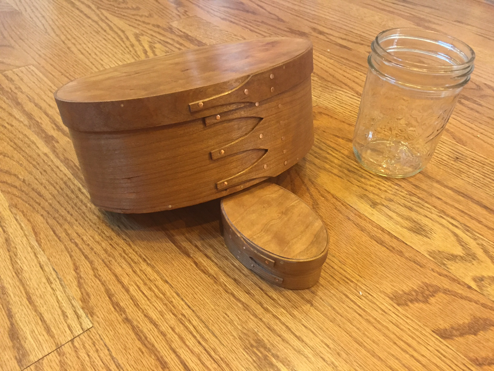
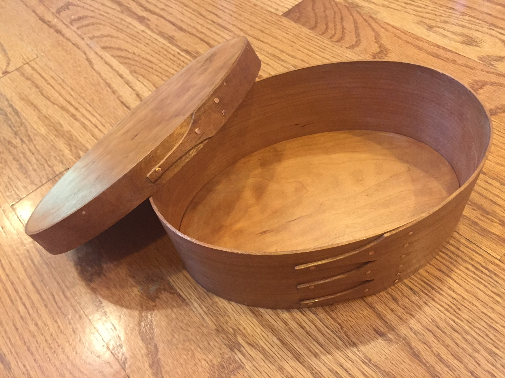

Shaker Oval Boxes
Location: Home > Woodworking > Shaker Oval Boxes
Thin wood and steam combine to make beautiful boxes. No glue is used in construction, instead copper tacks and wooden pegs hold everything together. I learned from the master, John Wilson. More at: http://shakerovalbox.com/

